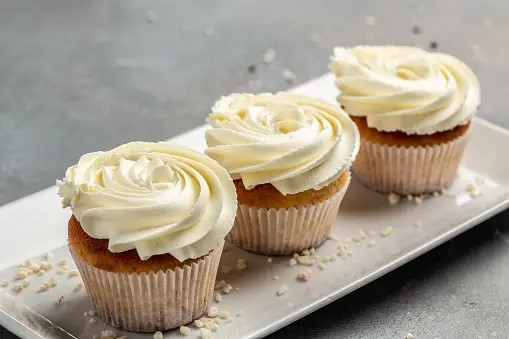
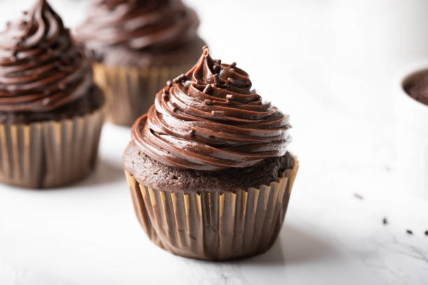
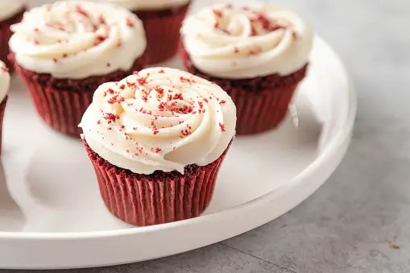

Vanilla Cupcake Recipe

Ingredients:
For the cupcakes
- 1 and 1/2 cups (190g) all-purpose flour
- 1 and 1/2 tsp baking powder
- 1/2 tsp baking soda
- 1/4 tsp salt
- 1/2 cup (115g) unsalted butter, softened
- 1 cup (200g) granulated sugar
- 2 large eggs
- 2 tsp vanilla extract
- 1/2 cup (120ml) whole milk
For the vanilla frosting
- 1 cup (230g) unsalted butter, softened
- 4 cups (480g) powdered sugar
- 1/4 cup (60ml) whole milk
- 2 tsp vanilla extract
- Pinch of salt
Instructions:
- Preheat your oven to 350°F (180°C) and line a muffin tin with paper cupcake liners.
- In a medium-sized bowl, whisk together the flour, baking powder, baking soda, and salt.
- Cream Butter and Sugar: In a separate large bowl, cream together the softened butter and sugar until light and fluffy.
- Add Eggs and Vanilla: Add the eggs, one at a time, beating well after each addition. Stir in the vanilla extract.
- Gradually add the dry ingredients to the butter mixture, alternating with the milk, beginning and ending with the dry mixture. Mix until just combined.
- Spoon the batter into the cupcake liners, filling each about two-thirds full.
- Bake in the preheated oven for 18-20 minutes, or until a toothpick inserted into the center of a cupcake comes out clean.
- Allow the cupcakes to cool in the pan for a few minutes, then transfer them to a wire rack to cool completely.
- While the cupcakes are cooling, make the frosting. In a medium bowl, beat the softened butter until creamy. Gradually add the powdered sugar, milk, vanilla extract, and a pinch of salt. Beat until smooth and creamy.
- Once the cupcakes are completely cooled, frost them with the vanilla frosting using a piping bag or a butter knife.
Decorate (optional): Add any additional decorations like sprinkles, edible pearls, or colored sugar.
Chocolate Cupcake Recipe

Ingredients:
For the cupcakes
- 1 and 1/3 cups (165g) all-purpose flour
- 1/3 cup (40g) unsweetened cocoa powder
- 1 tsp baking powder
- 1/2 tsp baking soda
- 1/4 tsp salt
- 1/2 cup (120ml) vegetable oil
- 1 cup (200g) granulated sugar
- 2 large eggs
- 2 tsp vanilla extract
- 1 cup (240ml) buttermilk (or 1 cup milk mixed with 1 tbsp vinegar or lemon juice, let sit for 5 minutes)
For the chocolate frosting
- 1/2 cup (115g) unsalted butter, softened
- 1/3 cup (40g) unsweetened cocoa powder
- 2 cups (240g) powdered sugar
- 1/4 cup (60ml) milk
- 1 tsp vanilla extract
Instructions:
- Preheat the Oven: Preheat your oven to 350°F (180°C) and line a muffin tin with paper cupcake liners.
- In a medium-sized bowl, whisk together the flour, cocoa powder, baking powder, baking soda, and salt.
- Mix Wet Ingredients: In a separate large bowl, whisk together the vegetable oil and sugar until well combined. Add the eggs one at a time, mixing well after each addition. Stir in the vanilla extract.
- Gradually add the dry ingredients to the wet ingredients, alternating with buttermilk, beginning and ending with the dry mixture. Mix until just combined.
- Fill Cupcake Liners: Spoon the batter into the cupcake liners, filling each about two-thirds full.
- Bake in the preheated oven for 18-20 minutes, or until a toothpick inserted into the center of a cupcake comes out clean.
- Allow the cupcakes to cool in the pan for a few minutes, then transfer them to a wire rack to cool completely.
Prepare Frosting:
- While the cupcakes are cooling, make the frosting. In a medium bowl, sift together the cocoa powder and powdered sugar. In a separate bowl, beat the softened butter until creamy. Gradually add the cocoa-sugar mixture, milk, and vanilla extract, and beat until smooth and creamy.
- Once the cupcakes are completely cooled, frost them with the chocolate frosting using a piping bag or a butter knife.
Decorate (optional): Add any additional decorations like sprinkles, chocolate chips, or cocoa powder.
Red Velvet Cupcake Recipe

Ingredients:
For the cupcakes
- 2 and 1/2 cups (312g) all-purpose flour
- 1 and 1/2 cups (300g) granulated sugar
- 1 tsp baking powder
- 1 tsp baking soda
- 1 tsp salt
- 1 tsp cocoa powder
- 1 and 1/2 cups (360ml) vegetable oil
- 1 cup (240ml) buttermilk, room temperature
- 2 large eggs, room temperature
- 2 tbsp red food coloring
- 1 tsp vanilla extract
- 1 tsp white vinegar
- 1/2 cup (120ml) hot water
For the cream cheese frosting
- 1 cup (230g) unsalted butter, softened
- 8 oz (225g) cream cheese, softened
- 4 cups (480g) powdered sugar
- 1 tsp vanilla extract
- Pinch of salt
Instructions:
- Preheat your oven to 350°F (180°C) and line a muffin tin with paper cupcake liners.
- In a medium-sized bowl, whisk together the flour, sugar, baking powder, baking soda, salt, and cocoa powder.
- In a separate large bowl, mix together the vegetable oil, buttermilk, eggs, red food coloring, vanilla extract, and white vinegar.
- Gradually add the dry ingredients to the wet ingredients, mixing until just combined. Scrape down the sides of the bowl as needed.
- Slowly add the hot water and mix until the batter is smooth. The batter will be thin, but that’s normal.
- Spoon the batter into the cupcake liners, filling each about two-thirds full.
- Bake in the preheated oven for 18-20 minutes, or until a toothpick inserted into the center of a cupcake comes out clean.
- Allow the cupcakes to cool in the pan for a few minutes, then transfer them to a wire rack to cool completely.
Prepare Frosting:
- While the cupcakes are cooling, make the cream cheese frosting.
- In a medium bowl, beat the softened butter and cream cheese until creamy.
- Gradually add the powdered sugar, vanilla extract, and a pinch of salt. Beat until smooth and creamy.
Frost the Cupcakes:
- Once the cupcakes are completely cooled, frost them with the cream cheese frosting using a piping bag or a butter knife.
Decorate (optional): Add any additional decorations like red sprinkles or a dusting of cocoa powder.